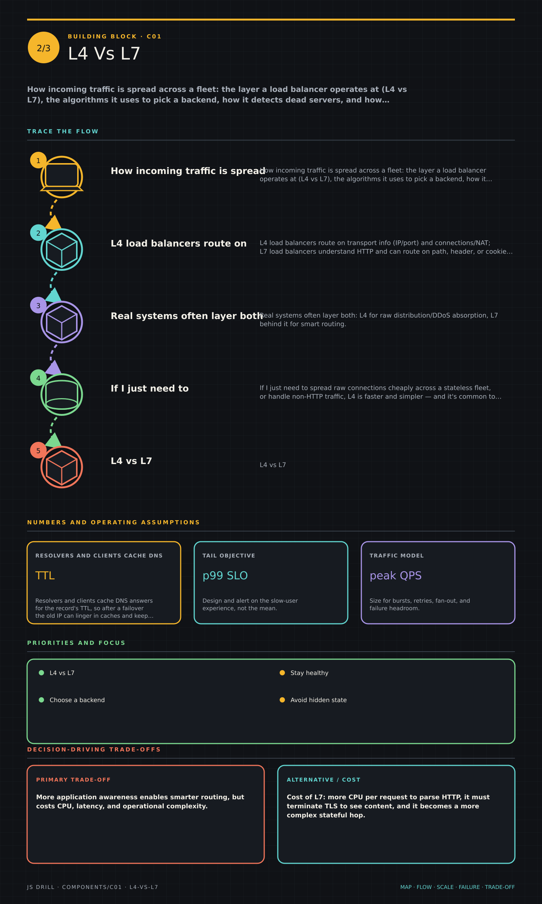

https://frosty110.github.io/js-drill/assets/system-design/infographics/components/c01/l4-vs-l7.pngHow incoming traffic is spread across a fleet: the layer a load balancer operates at (L4 vs L7), the algorithms it uses to pick a backend, how it detects dead servers, and how DNS/anycast steer users to the nearest healthy region.
All questions, model answers and diagrams for Load Balancing & Routing →